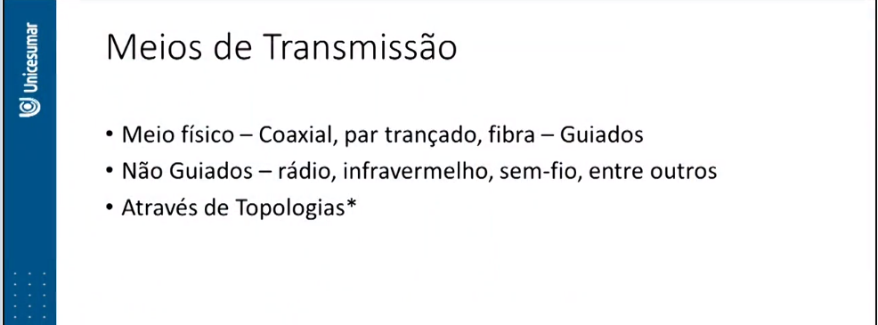
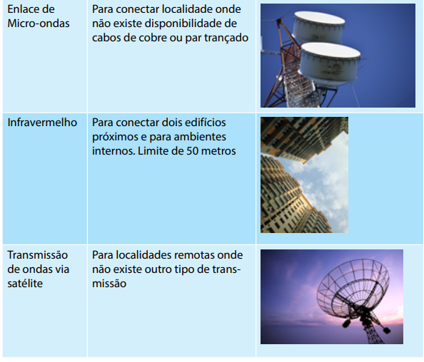
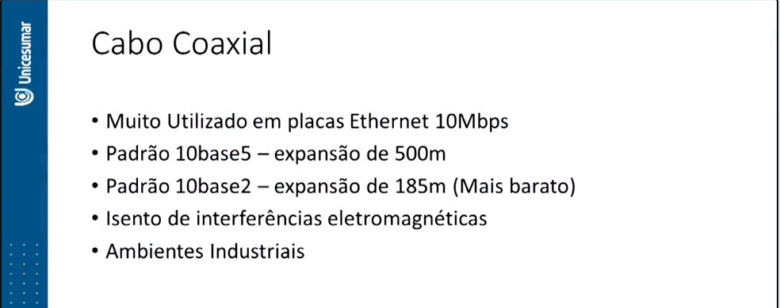
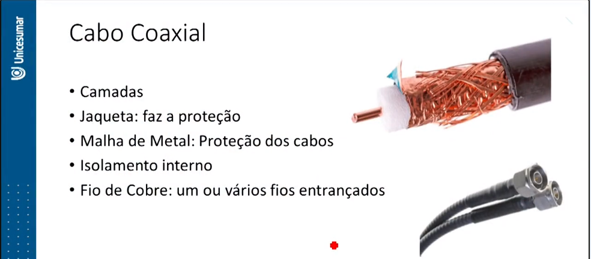
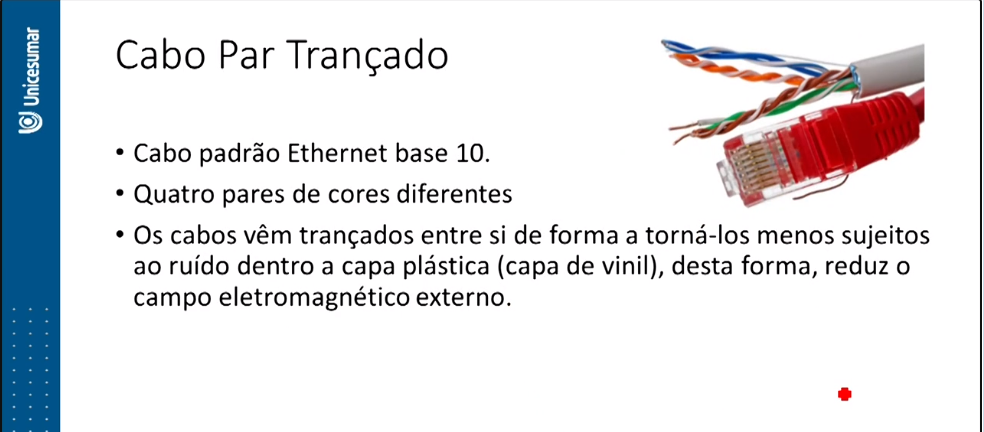
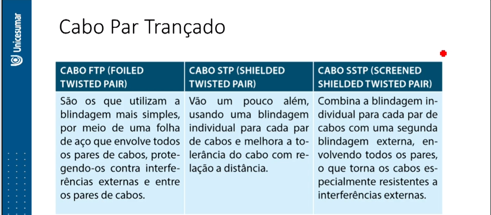
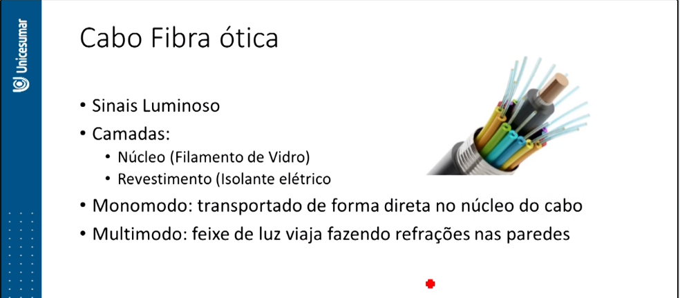

Plano de Estudo
A seguir, apresentam-se os tópicos que você estudará nesta unidade:
- Aplicações das Redes de Computadores
- Tipos de Redes de Computadores
- Hardware e Software de Rede
- Meios de Transmissão
- Topologias de Redes
mesmo video do tópico anterio, o professor fez 2 tópicos em uma aula só!
MEIOS DE TRANSMISSÃO
Neste tópico, exploraremos os conceitos de meios de transmissão, abrangendo tanto os meios físicos, como cabos (coaxial, par trançado e fibra), quanto as topologias de redes (Barramento, Anel e Estrela) que influenciam a disposição dos dispositivos de rede.
Os meios de transmissão referem-se à capacidade de transmitir dados de um dispositivo para outro. Atualmente, destacam-se várias mídias, incluindo:
- Par de cobre trançado: Para redes locais
- Cabos coaxiais: Para links de comunicação
- Fibra Ótica: Para equipamentos de longa distância
- Radiofusão: Para transmissão de dados via ondas de rádio
- Enlace de Micro-ondas: Para conectar localidades sem cabos de cobre ou par trançado
- Infravermelho: Para conectar edifícios próximos e ambientes internos (com limite de 50 metros)
- Transmissão de ondas via satélite: Para localidades remotas onde não há outra forma de transmissão

De acordo com Tanenbaum e Wetherall (2011), os meios de transmissão podem ser classificados como guiados (meios físicos, como cabos) e não guiados (sem fio, como rádio, infravermelho e satélite).
Iremos descrever com mais detalhes esses dois tipos de meios de transmissão.
Cabo Coaxial

O cabo coaxial foi um dos primeiros meios de transmissão de computadores, amplamente utilizado em placas ethernet de 10 Mbps. Era preferido em ambientes industriais sujeitos a interferências eletromagnéticas e quando a distância entre computadores era de cerca de 200 metros.
Os conectores BNC ("Bayonet Neill Concelman" ou "Bristish Naval Connector") eram usados para conectar o cabo às placas de rede dos computadores, e o conector em forma de "T" era usado para conectar os transceptores no cabo. Os padrões mais comuns eram o 10base5 e o 10base2.
O cabo 10base5 permitia expansões de até 500 metros, conectando até 100 dispositivos, embora fosse considerado grosso e pouco flexível. Era amplamente utilizado em redes de mainframes, mas tinha custos elevados.
O cabo 10base2 era mais fino e flexível, com uma blindagem simples, alcançando 185 metros e conectando até 30 computadores. Foi elogiado pela facilidade de expansão e pelo melhor custo-benefício.
Ambos os cabos eram usados na topologia de barramento, com um fio central e transceptores perfurando todas as camadas do cabo até o fio de cobre para transmitir o sinal.
A velocidade de transmissão era de 10 Mbps, seguindo o padrão ethernet de 10 megabits. Um terminador era necessário no primeiro e último computador da rede para evitar pacotes sombras que poderiam prejudicar o tráfego da rede.
O cabo coaxial tinha quatro camadas, incluindo uma jaqueta de proteção, uma malha de metal para evitar distorções nos dados, isolamento interno para proteger a blindagem e um fio de cobre para transportar os dados.
Cabo Par Trançado
O cabo par trançado (twisted pair) foi o primeiro cabo a ser usado no padrão Ethernet 10base-T. Este cabo possui quatro pares de cabos com cores diferentes, e cada cabo tem seu correspondente branco. Por exemplo, para a cor azul, há um cabo na cor branca com listras azuis. A formatação dos pares pode variar entre fabricantes.
Os cabos são trançados entre si para reduzir a suscetibilidade a ruídos. Isso é feito dentro de uma capa plástica (geralmente de vinil) para diminuir o campo eletromagnético externo que pode ser causado por equipamentos como motores, geradores elétricos, linhas de alta tensão e outros dispositivos que produzem esse tipo de campo magnético.
Os cabos par trançados são categorizados em várias classes, incluindo Cabo UTP (Unshielded Twist Pair), Cabo FTP (Foiled Twisted Pair), Cabo STP (Shielded Twisted Pair) e Cabo SSTP (Screened Shielded Twisted Pair). Cada categoria possui suas próprias características e usos específicos.
Cabo UTP (Unshielded Twist Pair)
O cabo UTP passou por várias evoluções, chegando até a categoria CAT5e, que é amplamente usada atualmente. As categorias anteriores, como CAT1, CAT2, CAT3 e CAT4, foram descontinuadas. O CAT5e é capaz de manter um sinal de qualidade em até 100 metros de distância, mas ultrapassar essa metragem pode causar perda de sinal.
Para distâncias maiores, são necessários repetidores a cada 100 metros, hubs ou switches. A velocidade do cabo UTP varia de acordo com a categoria, podendo chegar a 1 Gbps. Este cabo não possui blindagem, é flexível, fácil de instalar e possui conectores RJ45 para Ethernet e RJ11 para voz, tornando-o de baixo custo.
A Categoria 6 do cabo UTP oferece um custo-benefício superior ao CAT5 para redes de computadores. Ele possui uma blindagem interna mais eficaz para reduzir interferências entre os pares de cabos, além de usar espaçadores para distanciar os cabos e reduzir o crosstalk. Isso permite que a transmissão de dados alcance até 1 Gbps com uma frequência de 500 MHz.
Os cabos par trançados usam conectores RJ45 macho em suas pontas e conectores Jack fêmea para tomadas, hubs e switches que recebem o cabo com o conector RJ45. A cor externa dos cabos não afeta o desempenho da rede, mas é útil para distinguir setores físicos em grandes instalações.
Para crimpagem de cabos par trançado, você precisará de conectores RJ45, alicate de bico e um alicate de crimpagem de cabos RJ45. Esses cabos podem ser blindados ou não, com padrões como FTP (Foiled Twisted Pair), STP (Shielded Twisted Pair) e SSTP (Screened Shielded Twisted Pair), cada um com diferentes níveis de blindagem.
Cabo de Fibra Ótica
A fibra ótica é um meio de transmissão que utiliza sinais luminosos em vez de sinais elétricos para transmitir informações. Isso ocorre por meio do fenômeno da refração interna total, que reflete feixes de luz a longa distância.
Os cabos de fibra ótica estão substituindo os fios de cobre devido à sua capacidade de aumentar a velocidade de transmissão de informações digitais. Eles consistem em um núcleo de vidro muito fino, geralmente feito de sílica, coberto por uma camada de sílica que permite a reflexão de feixes de luz por longas distâncias. Esses cabos possuem, no mínimo, duas camadas: o núcleo (filamento de vidro) e o revestimento (material eletricamente isolante), tornando-os imunes a ruídos e, portanto, mais eficientes na comunicação.
Os cabos de fibra ótica garantem alta confiabilidade na transmissão de sinais, dados, voz e vídeo. A transmissão ocorre lançando um feixe de luz em uma extremidade da fibra, que viaja por meio de reflexões sucessivas pela fibra.
Existem dois principais tipos de fibras óticas:
- Fibra Monomodo: Nessa fibra, um único sinal de luz é transportado diretamente no núcleo do cabo, permitindo alcançar distâncias maiores sem repetição. Isso possibilita o tráfego de luz a distâncias de até 80 quilômetros no padrão 10 Gigabit.
- Fibra Multimodo: Nessa fibra, um feixe de luz viaja ao longo do trajeto, sofrendo diferentes refrações nas paredes do núcleo do cabo.
De acordo com uma notícia publicada pelo site "Investimentos e Notícias" em outubro de 2015, há aproximadamente 160,4 milhões de assinantes conectados no mundo utilizando a fibra ótica.
Fazer simulado referente ao tópico 2